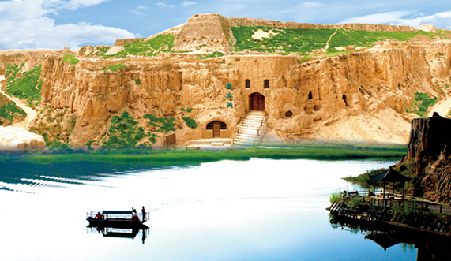
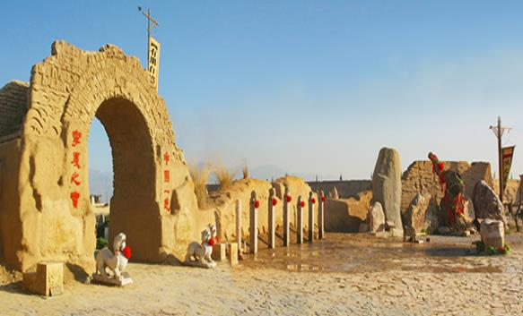
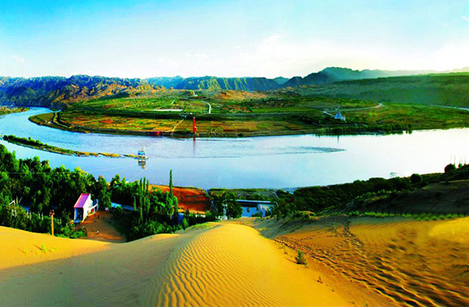
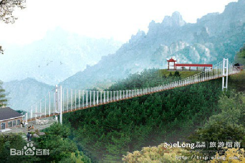
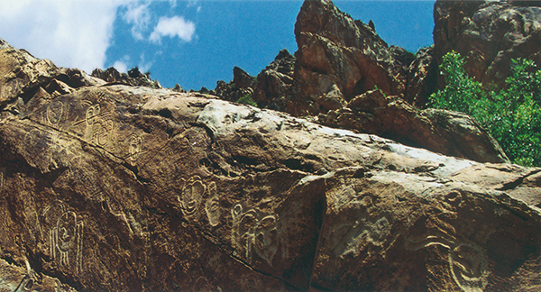
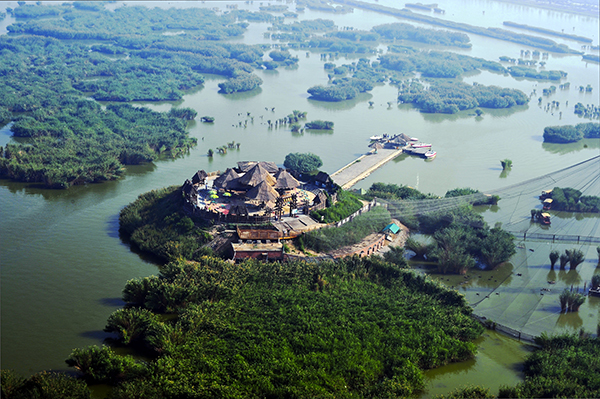
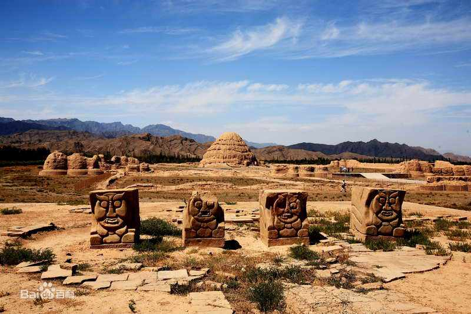
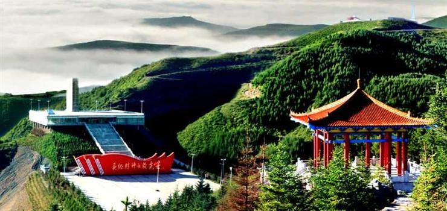
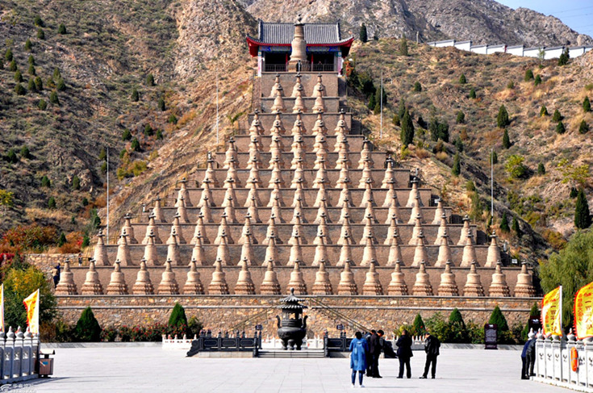

水洞沟 |
水洞沟是中国最早发掘的旧石器时代文化遗址，被誉为“中国史前考古的发祥地”、“中西方文化交流的历史见证”。是全国重点文物保护单位，国家AAAA级旅游景区，国家地质公园。被国家列为全国文物保护的100处大遗址之一、“最具中华文明意义的百项考古发现”之一。荣获“中国最值得外国人去的50个地方”银奖。这里造就了魔鬼城、旋风洞、卧驼岭、摩天崖、断云谷、柽柳沟等二十多处景观。古代明长城、烽燧、城堡、藏兵洞、沟堑、墩台等军事防御建筑大观园，是中国唯一保存最完整的万里长城立体军事防御体系。 |
镇北堡西部影城 |
镇北堡西部影城地处贺兰山东麓，距银川市火车站25千米，河东机场60千米，110国道和银川北环高速直达影城，是贺兰山东麓旅游景区的景点，为国家级AAAAA级旅游景区，被国务院和文化部评为“国家文化产业示范基地”和“国家级非物质文化遗产代表作名录项目保护性开发综合实验基地”。 |
沙坡头旅游区 |
沙坡头旅游区位于宁夏中卫市城区以西20千米腾格里沙漠东南边缘处。自然景观独特，人文景观丰厚，被旅游界专家誉为世界垄断性旅游资源。沙坡头旅游区是国家首批AAAA级旅游景区，是国家级沙漠生态自然保护区，是中国三大鸣沙——沙坡鸣钟所在地，2004年被国家体育总局授予“全民健身二十个著名景观”，同年10月又中央电视台评为“中国十个最好玩的地方”。 |
苏峪口国家森林公园 |
贺兰山苏峪口国家森林公园，地处宁夏首府银川市近郊，是中国国内离省会城市最近的国家森林公园，总面积9587公顷，植被覆盖率达70%，拥有各种野生动植物资源898种，其每平方千米岩羊分布量居世界首位，是宁夏著名的生态旅游景区和国家AAAA级旅游景区。 |
贺兰山岩画风景区 |
贺兰山岩画风景区位于银川市西倚的贺兰山中，距市区56千米。是国家AAAA级旅游景区，全国重点文物保护单位，国家级风景名胜区。1997年，被联合国教科文组织列为非正式世界文化遗产名录，2006年，被建设部列入首批中国国家自然与文化双遗产预备名录，同年，获得“中国最值得外国人去的50个地方”之一金奖。岩画就分布在沿溪道两侧绵延800多米的山岩崖壁上，总数多达6000余幅，记录了3000至10000年前远古人类写实的生活画面 |
沙湖生态旅游区 |
沙湖生态旅游区位于宁夏回族自治区首府银川以北42千米，包兰铁路、京藏高速、109国道傍湖而过。湖泊面积45平方千米，平均水深2.2米，沙漠面积22.52平方千米，最高处可达百米。2007年景区荣获国家首批5A级景区，并被中央文明办、建设部、国家旅游局确定为“全国文明风景旅游区示范点”、“全国旅游系统先进集体”，并在西部旅游行业率先通过了ISO9001质量管理体系和ISO14001环境管理体系两项国际认证。2010年沙湖景区荣膺“中国十大魅力休闲旅游湖泊”称号。 |
西夏王陵 |
西夏王陵为国家4A级景区；全国重点文物保护单位；中国世界文化遗产预备名单；首批中国国家自然与文化双遗产预备名单。西夏陵是西夏王朝的皇家陵园，在方圆58平方千米的陵区内，9座帝陵布列有序，255座陪葬墓星罗棋布，陵园规模宏大，是中国现存规模最大、地面遗址保存最完整的帝王陵园之一。 |
六盘山红军长征纪念馆 |
六盘山红军长征纪念馆位于宁夏回族自治区固原市隆德县境内的六盘山上，于2005年9月18日落成，由纪念馆、纪念碑、纪念广场、纪念亭、吟诗台五部分组成。海拔2832米，距固原市区50公里，距隆德县城14公里，“312”国道、“101”省道、银（川）平（凉）公路从山下通过。是宁夏回族自治区党委、政府为纪念红军长征翻越六盘山既长征胜利70周年而建的红色旅游景点。 |
一百零八塔 |
一百零八塔，位于宁夏吴忠青铜峡市，是始建于西夏时期的喇嘛式实心塔群，是中国现存最大且排列最整齐的喇嘛塔群之一；总面积6980平方米。 一百零八塔，塔群随山势凿石分阶而建，共分十二阶梯式平台，由下而上逐层增高，依山势自上而下，按1、3、3、5、5、7、9······的奇数排列成十二行，形成总体平面呈三角形的巨大塔群，总计一百零八座，因塔数而得名。是世上稀有的大型塔阵，以其独特的建筑格局、神秘的西夏历史和深远的佛教文化闻名遐迩 |
中华回乡文化园 |
国家AAAA级旅游景区、国家文化产业示范基地---中华回乡文化园位于宁夏回族自治区银川市郊，是国家发改委批准建设的全国唯一以展示、弘扬回族、伊斯兰先进文化为主题的文化旅游综合景区。中华回乡文化园的建设，显著增强了宁夏回乡风情旅游的文化内涵，为挖掘、抢救、保护、传承回族文化遗产和非物质文化遗产做出了重要贡献。 |